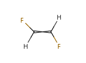
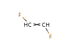
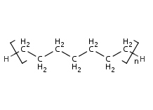
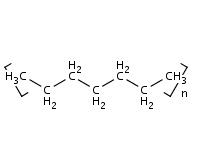
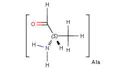
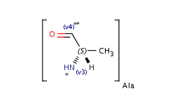

The following methods are available in
chemaxon.calculations.Hydrogenize class to convert
explicit hydrogens to implicit ones:
Hydrogenize.removeHAtoms(MoleculeGraph molecule, MolAtom[] atoms, int f, boolean add)
Hydrogenize.removeHAtoms(MoleculeGraph molecule, MolAtom[] atoms, int f)
Hydrogenize.removeHAtoms(MoleculeGraph molecule, int f)
Hydrogenize.removeHAtoms(MoleculeGraph molecule)In the first three methods it is possible to define which type of Hydrogen
atoms should be implicitized.
By default, removeHAtoms() removes those Hydrogens that
removal does not cause
information loss. This behavior can be extended with the following flags.
LONELY_H – include Hydrogen atom without connection as well;
ISOTOPE_H – include isotope Hydrogen atom as well;
CHARGED_H – include charged Hydrogen atom as well;
RADICAL_H – include Hydrogen radical as well;
MAPPED_H – include Hydrogen with atom map as well;
WEDGED_H – include Hydrogen with wedged bond as well;
HCONNECTED_H – include Hydrogen connected to Hydrogen atom
as well; CTSPECIFIC_H – include Hydrogen atom(s) connecting alone
to one side of a double bond with specified CIS or TRANS stereo information.
as well; POLYMERENDGROUP_H – include Hydrogen atom(s) which have a
neighbor that is in an Sgroup (not DataSgroup or SuperatomSgroup) as well;
SGROUPEND_H – include Hydrogen atom(s) which have a neighbor
that is in SuperatomSgroup as well;
VALENCEERROR_H - include Hydrogen atoms that connects to an
atom that has valence error as well;
ALL_H – all Hydrogen atoms.
Hydrogenize.removeHAtoms(molecule, MolAtom.ALL_H & ~MolAtom.CHARGED_H);
Hydrogenize.removeHAtoms(molecule, MolAtom.MolAtom.CTSPECIFIC_H);
 
Hydrogenize.removeHAtoms(molecule, MolAtom.POLYMERENDGROUP_H);All explicit hydrogens are converted to implicit hydrogens.
 
Hydrogenize.removeHAtoms(molecule, MolAtom.SGROUPEND_H);After the removal of the explicit hydrogen, an S-group attachment point is taken to the S-group atom. All of the explicit hydrogens in the S-group will be replaced by implicit ones as well.
 
|
Converting implicit Hydrogens to explicit |